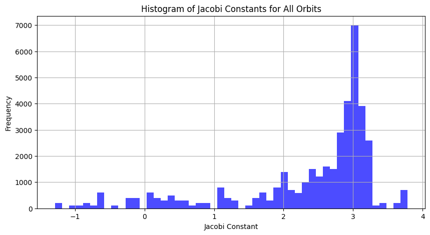
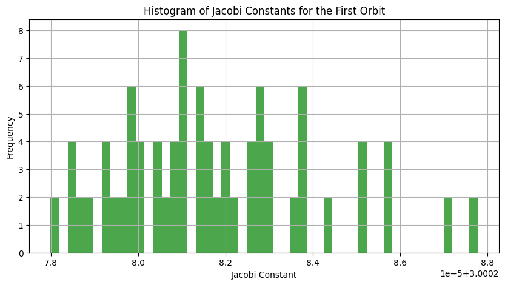
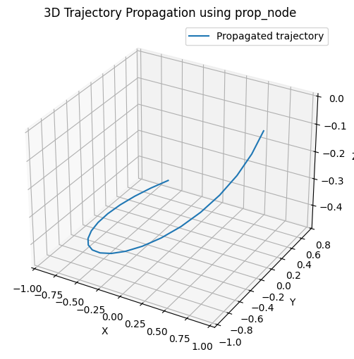
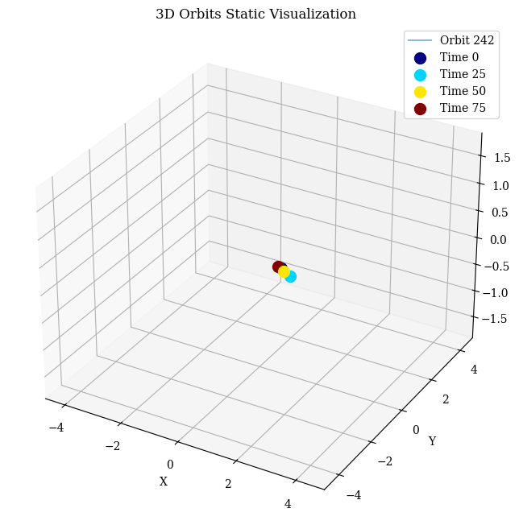
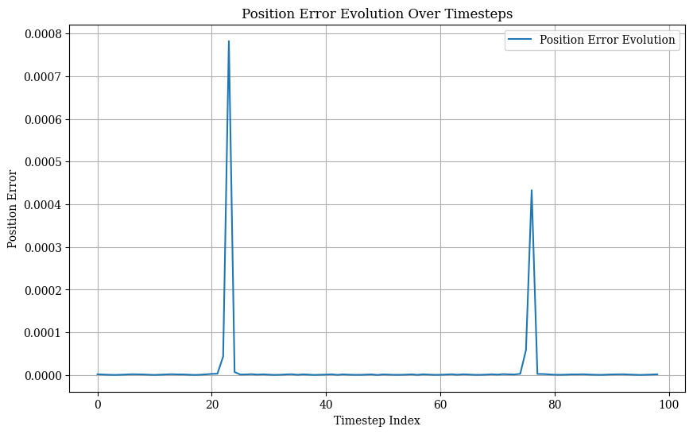
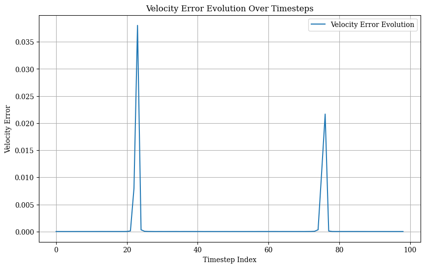
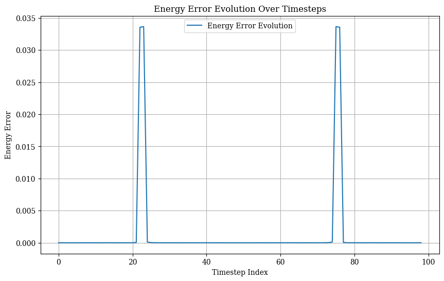

orbit_data = get_example_orbit_data()
orbit_data.shape(200, 6, 300)Propagation implemented by Walther Litteri
jacobi_constant (X:numpy.ndarray, mu:float)
*State-dependent Jacobi constant for a given state vector X and gravitational parameter mu.
Parameters: X (np.ndarray): Cartesian state vector with 6 components (x, y, z, xp, yp, zp). mu (float): Gravitational parameter.
Returns: Tuple[float, float]: Jacobi constant (J) and total energy (E).*
| Type | Details | |
|---|---|---|
| X | ndarray | Cartesian state vector with 6 components (x, y, z, xp, yp, zp) |
| mu | float | Gravitational parameter |
| Returns | Tuple |
# Calculate Jacobi constants and energies for all orbits at all time points
jacobi_constants = np.zeros((200, 300))
total_energies = np.zeros((200, 300))
for orbit_index in range(200):
for time_index in range(300):
X = orbit_data[orbit_index, :, time_index]
J, E = jacobi_constant(X, EM_MU)
jacobi_constants[orbit_index, time_index] = J
total_energies[orbit_index, time_index] = E
# Flatten the Jacobi constants array to plot the histogram of all values
jacobi_constants_all = jacobi_constants.flatten()
# Plot histogram of Jacobi constants for all orbits
plt.figure(figsize=(10, 5))
plt.hist(jacobi_constants_all, bins=50, color='blue', alpha=0.7)
plt.title('Histogram of Jacobi Constants for All Orbits')
plt.xlabel('Jacobi Constant')
plt.ylabel('Frequency')
plt.grid(True)
plt.show()
# Plot histogram of Jacobi constants for the first orbit
jacobi_constants_first_orbit = jacobi_constants[0, :]
plt.figure(figsize=(10, 5))
plt.hist(jacobi_constants_first_orbit, bins=50, color='green', alpha=0.7)
plt.title('Histogram of Jacobi Constants for the First Orbit')
plt.xlabel('Jacobi Constant')
plt.ylabel('Frequency')
plt.grid(True)
plt.show()

eom_cr3bp (t:float, X:numpy.ndarray, mu:float)
*Equations of motion for the Circular Restricted 3 Body Problem (CR3BP). The form is X_dot = f(t, X, (parameters,)). This formulation is time-independent as it does not depend explicitly on t.
Parameters: t (float): Time variable (not used in this formulation). X (np.ndarray): State vector with 6 components (x, y, z, v_x, v_y, v_z). mu (float): Gravitational parameter.
Returns: List[float]: Derivatives of the state vector.*
| Type | Details | |
|---|---|---|
| t | float | Time variable (not used in this formulation) |
| X | ndarray | State vector with 6 components (x, y, z, v_x, v_y, v_z) |
| mu | float | Gravitational parameter |
| Returns | List |
# Select a random orbit from the dataset
num_orbits, num_components, num_time_points = orbit_data.shape
random_orbit_index = np.random.randint(0, num_orbits)
X0 = orbit_data[random_orbit_index, :, 0]
mu = 0.01215058560962404
T0 = 2.7430007981241529E+0 # Total time for the propagation, can be adjusted as needed
# Propagate the orbit using solve_ivp
sol = solve_ivp(eom_cr3bp, [0, T0], X0, args=(mu,), dense_output=True, rtol=1e-9, atol=1e-9, method='Radau')
tvec = np.linspace(0, T0, num_time_points)
z = sol.sol(tvec)
# Compute derivatives using eom_cr3bp for a specific state in the propagated orbit
time_index = np.random.randint(0, num_time_points - 1) # Choose a random time index
t = tvec[time_index]
X = z[:, time_index]
computed_derivatives = eom_cr3bp(t, X, mu)
# Compare with actual changes in state vector
delta_t = tvec[1] - tvec[0]
actual_derivatives = (z[:, time_index + 1] - z[:, time_index]) / delta_t
# Visualize the actual trajectory and computed derivatives
fig, axs = plt.subplots(2, 1, figsize=(10, 12))
# Plot the actual trajectory
axs[0].plot(z[0], z[1], label='Trajectory')
axs[0].scatter(z[0, time_index], z[1, time_index], color='red', label='Point of Interest')
axs[0].set_xlabel('x')
axs[0].set_ylabel('y')
axs[0].set_title('Trajectory in the XY plane')
axs[0].legend()
axs[0].grid(True)
# Plot computed vs. actual derivatives
labels = ['x_dot', 'y_dot', 'z_dot', 'x_ddot', 'y_ddot', 'z_ddot']
width = 0.3 # width of the bars
x = np.arange(len(labels)) # the label locations
axs[1].bar(x - width/2, computed_derivatives, width, label='Computed')
axs[1].bar(x + width/2, actual_derivatives, width, label='Actual')
axs[1].set_xticks(x)
axs[1].set_xticklabels(labels)
axs[1].set_xlabel('Derivative')
axs[1].set_ylabel('Value')
axs[1].set_title('Computed vs Actual Derivatives')
axs[1].legend()
axs[1].grid(True)
plt.tight_layout()
plt.show()prop_node (X:numpy.ndarray, dt:float, mu:float)
*Return the state X after a given time step dt = T_end - T_start.
Parameters: X (np.ndarray): Initial state vector with 6 components (x, y, z, v_x, v_y, v_z). dt (float): Time step for propagation. mu (float): Gravitational parameter.
Returns: np.ndarray: Final state vector after time step dt.*
| Type | Details | |
|---|---|---|
| X | ndarray | Initial state vector with 6 components (x, y, z, v_x, v_y, v_z) |
| dt | float | Time step for propagation |
| mu | float | Gravitational parameter |
| Returns | ndarray |
# Select a random orbit from the dataset
num_orbits, num_components, num_time_points = orbit_data.shape
random_orbit_index = np.random.randint(0, num_orbits)
X0 = orbit_data[random_orbit_index, :, 0]
mu = 0.01215058560962404
dt = 0.1 # Small time step for propagation
# Propagate the state vector using prop_node
X_final = prop_node(X0, dt, mu)
# Print the initial and final state vectors
print("Initial state vector:", X0)
print("Final state vector after time step dt:", X_final)
# To visualize the propagation, we can propagate over multiple time steps and plot the trajectory
T_total = 2.0 # Total time for propagation
time_steps = int(T_total / dt)
trajectory = np.zeros((time_steps + 1, 6))
trajectory[0] = X0
# Propagate step by step
X_current = X0
for i in range(1, time_steps + 1):
X_current = prop_node(X_current, dt, mu)
trajectory[i] = X_current
# Plot the trajectory
fig = plt.figure(figsize=(10, 6))
ax = fig.add_subplot(111, projection='3d')
ax.plot(trajectory[:, 0], trajectory[:, 1], trajectory[:, 2], label='Propagated trajectory')
ax.set_xlabel('X')
ax.set_ylabel('Y')
ax.set_zlabel('Z')
ax.set_title('3D Trajectory Propagation using prop_node')
ax.legend()
plt.show()Initial state vector: [ 1.02948208 0. -0.1867957 0. -0.11894369 0. ]
Final state vector after time step dt: [ 1.02873876 -0.01181343 -0.18439385 -0.01485109 -0.11651009 0.04812437]
jacobi_test (X:numpy.ndarray, mu:float)
*Compute the energy error. X can have either 6 columns (state vector) or 7 columns (time + state vector). The returned quantity is the cumulative error with respect to the initial value. If propagation is perfect, err = 0 (or very small).
Parameters: X (np.ndarray): State vector with shape (n, 6) or (n, 7), where n is the number of samples. mu (float): Gravitational parameter.
Returns: float: Cumulative energy error with respect to the initial value.*
| Type | Details | |
|---|---|---|
| X | ndarray | State vector with shape (n, 6) or (n, 7), where n is the number of samples |
| mu | float | Gravitational parameter |
| Returns | float |
dynamics_defect (X:numpy.ndarray, mu:float)
*Compute the dynamical defect for the generated time-state sequence. The returned quantity is the cumulative error on the position and velocity components. The overall metrics can be a combination of these two last errors.
Parameters: X (np.ndarray): Time-state vector with shape (n, 7), where the first column is the time vector. mu (float): Gravitational parameter.
Returns: Tuple[float, float]: Cumulative errors in position and velocity.*
| Type | Details | |
|---|---|---|
| X | ndarray | Time-state vector with shape (n, 7), where the first column is the time vector |
| mu | float | Gravitational parameter |
| Returns | Tuple |
# Select a random orbit from the dataset
num_orbits, num_components, num_time_points = orbit_data.shape
random_orbit_index = np.random.randint(0, num_orbits)
selected_orbit = orbit_data[random_orbit_index, :, :]
# Add a time column to the state vector for dynamics_defect function
# Assuming the time steps are evenly spaced and given by the array tvec
tvec = np.linspace(0, 2.7430007981241529E+0, num_time_points)
time_state_vector = np.hstack((tvec.reshape(-1, 1), selected_orbit.T))
# Test jacobi_test function
energy_error = jacobi_test(selected_orbit.T, mu)
print("Cumulative energy error for the selected orbit:", energy_error)
# Test dynamics_defect function
pos_error, vel_error = dynamics_defect(time_state_vector, mu)
print("Cumulative position error for the selected orbit:", pos_error)
print("Cumulative velocity error for the selected orbit:", vel_error)
# Visualize the numerically propagated orbit
visualize_static_orbits(orbit_data, time_instants=[0, 100, 200, 295], orbit_indices=[random_orbit_index])
# Visualize the cumulative errors calculated
fig, ax = plt.subplots(figsize=(10, 6))
labels = ['Cumulative Position Error', 'Cumulative Velocity Error']
errors = [pos_error, vel_error]
ax.bar(labels, errors, color=['blue', 'green'])
ax.set_ylabel('Error')
ax.set_title('Cumulative Position and Velocity Errors')
ax.grid(True)
plt.tight_layout()
plt.show()Cumulative energy error for the selected orbit: 0.00022752154970095972
Cumulative position error for the selected orbit: 0.07835299756599234
Cumulative velocity error for the selected orbit: 0.147666860309554
calculate_errors (orbit_data:numpy.ndarray, mu:float, orbit_indices:List[int]=None, error_types:List[str]=['position', 'velocity', 'energy'], time_step:Optional[float]=None, display_results:bool=True, cumulative:bool=False)
Calculate and return the cumulative error and the average error per time step for the selected orbits together. Optionally, display the evolution of each error as a chart.
| Type | Default | Details | |
|---|---|---|---|
| orbit_data | ndarray | 3D array of orbit data | |
| mu | float | Gravitational parameter | |
| orbit_indices | List | None | List of integers referring to the orbits to analyze |
| error_types | List | [‘position’, ‘velocity’, ‘energy’] | Types of errors to calculate |
| time_step | Optional | None | Optional time step if time dimension is not included |
| display_results | bool | True | Boolean to control whether to display the results |
| cumulative | bool | False | Boolean to control cumulative or average error |
| Returns | Dict |
errors = calculate_errors(orbit_data, EM_MU, orbit_indices = [0, 1, 2], time_step=0.00917391571278981)Cumulative position error for selected orbits: 0.234824159550522
Average position error per time step: 0.0002617883607029231
Cumulative velocity error for selected orbits: 0.44235011161515836
Average velocity error per time step: 0.0004931439371406447
Cumulative energy error for selected orbits: 0.0006821222552635398
Average energy error per time step: 7.604484451098548e-07
calculate_errors_per_orbit (orbit_data:numpy.ndarray, mu:float, error_types:List[str]=['position', 'velocity', 'energy'], time_step:Optional[float]=None, display_results:bool=False)
Calculate and return the average error per orbit for the selected error types. Optionally, display the evolution of each error as a chart.
| Type | Default | Details | |
|---|---|---|---|
| orbit_data | ndarray | 3D array of orbit data | |
| mu | float | Gravitational parameter | |
| error_types | List | [‘position’, ‘velocity’, ‘energy’] | Types of errors to calculate |
| time_step | Optional | None | Optional time step if time dimension is not included |
| display_results | bool | False | Boolean to control whether to display the results |
| Returns | Dict |
errors = calculate_errors_per_orbit(orbit_data[0:3], EM_MU, time_step=0.00917391571278981, display_results=True)Average Position Error per Orbit:
[0.00026157 0.00026175 0.00026205]
Average Velocity Error per Orbit:
[0.00049252 0.00049305 0.00049387]
Average Energy Error per Orbit:
[7.60028806e-07 7.60374891e-07 7.60941638e-07]